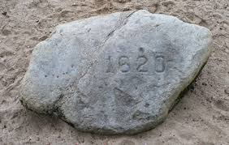

Man, I hate Plymouth. I bet people from Plymouth hate Plymouth.

I remember going there in elementary school on a field trip to Plimoth Plantation. It's a weird concept having people dress up and act like Pilgrims and Native Americans. Not only that, but they constructed buildings
There's a lot of similar markets like them. Near the Commons, there's Despensa Familiar, and further down in Newton, there's Salgueros Market (which my dad has claimed is owned by distant cousins, but who knows?). A lot of these places give people like my family a safe haven, a taste of home away from home. It's nice I get to be a part of that as well.